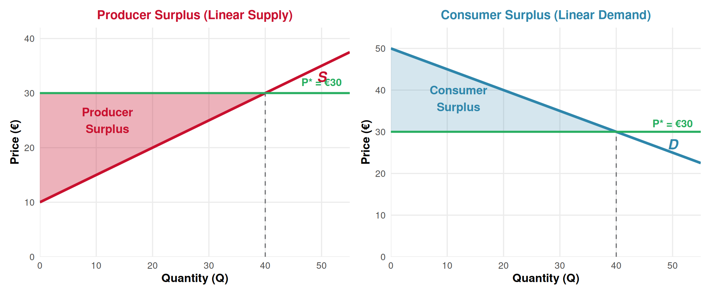
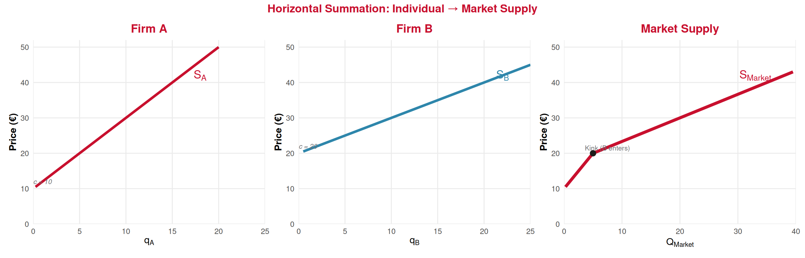
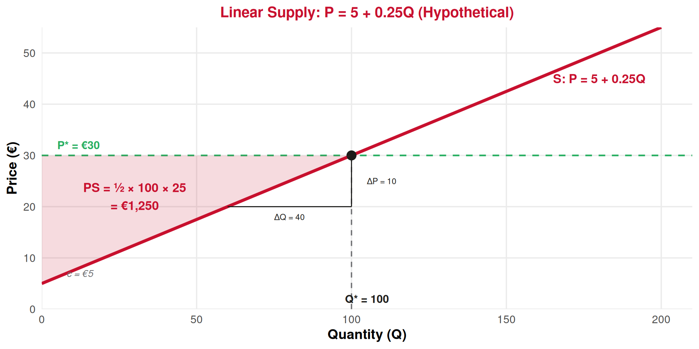
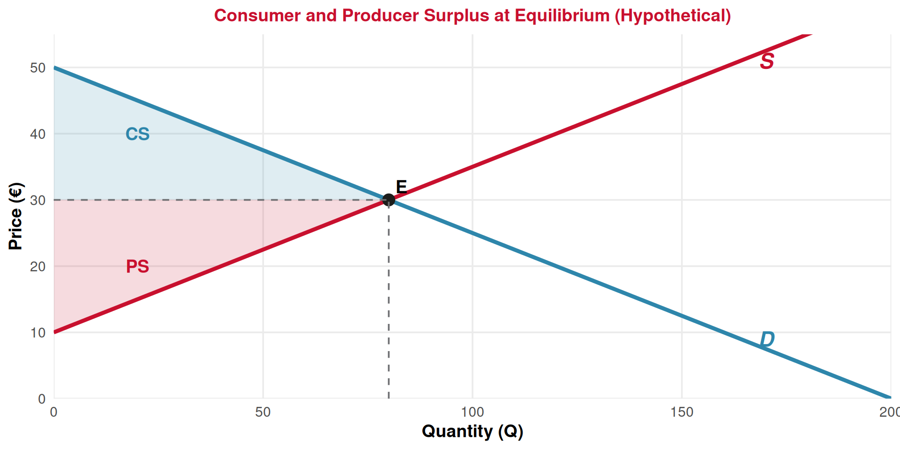

Producer Theory
Lecture 14: Producer Surplus, Market Supply & Linear Supply
Paulo Fagandini
2026
Recap: Lecture 13 ⏪
What we covered last time:
- The seller’s supply rule: Produce where \(P = MC\) (rising portion, \(P \geq AVC\))
- The individual supply curve = MC above AVC
- Supply shifts: input costs ↑ → supply shifts left; technology ↑ → supply shifts right
- Fixed costs don’t shift the short-run supply curve
. . .
🎯 Today: Three new pieces to complete the supply-side toolkit:
- 1️⃣ Producer surplus — the supply-side mirror of consumer surplus
- 2️⃣ Market supply — adding up individual firms’ supply curves
- 3️⃣ Linear supply — the equation \(P = c + dQ\) and how to work with it
Producer Surplus
The Intuition: What Do Producers Gain? 💰
In Lecture 8, we learned that consumer surplus measures the net benefit buyers get from a market — the gap between what they’re willing to pay and what they actually pay.
Producer Surplus (PS)
The net benefit producers get from selling in a market. It is the difference between the price they receive and the minimum price they would have been willing to accept (their marginal cost).
\[PS = \text{Total Revenue} - \text{Total Variable Cost} = TR - VC\]
Graphically: the area above the supply curve and below the price line.
💡 Producer surplus is not the same as profit! Profit = TR − TC = TR − VC − FC. Producer surplus = TR − VC. The difference is fixed costs:
\[PS = \pi + FC\]
PS vs Profit: Why the Difference Matters 🤔
Producer Surplus = \(TR - VC\)
- Measures the gain from trading in this market
- Does not subtract FC (which must be paid regardless)
- Equals the area above the supply curve, below P
- Always ≥ 0 (if the firm is operating)
Economic Profit = \(TR - TC = TR - VC - FC\)
- Measures the bottom-line result after all costs
- Subtracts both VC and FC
- Can be positive, zero, or negative
- \(\pi = PS - FC\)
. . .
Example: A hotel earns TR = €50,000, has VC = €30,000 and FC = €25,000.
- \(PS = 50{,}000 - 30{,}000 = €20{,}000\) ➡️ the hotel gains €20,000 from operating
- \(\pi = 50{,}000 - 55{,}000 = -€5{,}000\) ➡️ the hotel makes a loss!
- But \(PS > 0\) means the hotel is still better off operating (it covers VC and contributes €20,000 toward FC)
👉 This is exactly the shutdown logic from Lecture 12!
Producer Surplus Graphically 📊
Left: PS = area above supply, below price = triangle. Right: CS = area below demand, above price = triangle (from Lecture 8). They are mirror images!
Calculating PS for Linear Supply ✏️
Producer Surplus Formula (Linear Supply)
\[PS = \frac{1}{2} \times Q^* \times (P^* - c)\]
where \(c\) is the vertical intercept of the supply curve (the minimum price at which any output is supplied) and \(P^*\) is the market price.
Example (from the graph): Supply is \(P = 10 + 0.5Q\), market price \(P^* = €30\).
At \(P^* = 30\): \(Q^* = \frac{30 - 10}{0.5} = 40\)
\[PS = \frac{1}{2} \times 40 \times (30 - 10) = \frac{1}{2} \times 40 \times 20 = €400\]
👉 Compare with CS formula: \(CS = \frac{1}{2} \times Q^* \times (b - P^*)\). Same triangle logic, just flipped!
What Does PS Tell Us in Tourism? ✈️
PS measures the net gain to producers from selling at the market price.
Tourism applications:
- 🏨 Higher hotel prices in peak season → PS rises (the area above supply expands)
- 🧾 A tourist tax → price received by hotel falls → PS falls
- 📈 New technology (lower MC) → supply shifts right → PS can rise even at the same price
Policy perspective:
- Total welfare = CS + PS
- Taxes/regulations reduce CS + PS (deadweight loss)
- PS helps measure the impact on producers of any policy change
👉 When Portugal debates a tourist tax, PS is one way to measure how much hotels and tour operators lose.
Market Supply
From Individual to Market Supply 🏭 ➡️ 🏛️
Market Supply = Horizontal Sum of Individual Supply Curves
Just as we built market demand by adding individual demand curves horizontally (Lecture 8), we build market supply the same way: at each price, add up the quantities supplied by all firms.
The process:
- At a given price \(P\), each firm \(i\) supplies \(q_i\) (where \(P = MC_i\))
- Market quantity at that price: \(Q_S = q_1 + q_2 + q_3 + \ldots\)
- Repeat for every price
- Connect the dots → market supply curve
👉 If firms have different cost structures, the market supply curve may have kinks (just like market demand in Lecture 8!)
Horizontal Summation: Two Firms Example ➕

- For \(P < 10\): no firm produces → \(Q_S = 0\)
- For \(10 \leq P < 20\): only Firm A produces → \(Q_S = q_A\)
- For \(P \geq 20\): both firms produce → \(Q_S = q_A + q_B\) (kink at P = 20!)
👉 The kink occurs when Firm B’s supply “turns on” — same logic as the demand kink in Lecture 8.
Building the Market Supply Equation 📏
From the previous example:
Firm A: \(P = 10 + 2q_A\) → \(q_A = \frac{P - 10}{2}\) for \(P \geq 10\)
Firm B: \(P = 20 + q_B\) → \(q_B = P - 20\) for \(P \geq 20\)
Market supply (horizontal sum = add quantities at each price):
For \(10 \leq P < 20\) (only A): \(Q_S = q_A = \frac{P - 10}{2}\)
For \(P \geq 20\) (A + B): \(Q_S = \frac{P - 10}{2} + (P - 20) = \frac{P - 10 + 2P - 40}{2} = \frac{3P - 50}{2}\)
. . .
With identical firms, it’s simpler!
If there are \(n\) identical firms each with supply \(q = \frac{P - c}{d}\), then:
\[Q_S = n \times q = n \times \frac{P - c}{d}\]
The market supply has the same intercept but a flatter slope (more responsive to price).
Linear Supply
The Linear Supply Equation 📏
Linear Supply — Inverse Form
\[P = c + dQ\]
where \(P\) is price, \(Q\) is quantity supplied, \(c\) is the vertical intercept, and \(d > 0\) is the slope.
Interpreting the parameters:
- \(c\) = the minimum price needed for any production (supply “turns on” at \(P = c\))
- \(d = \frac{\Delta P}{\Delta Q}\) (positive!) — how much price must rise to induce one more unit of output
- Direct form: \(Q = \frac{P - c}{d}\) (useful for horizontal summation)
👉 Compare with demand: \(P = b + mQ\) where \(m < 0\). Supply has \(d > 0\) — that’s the upward slope!
Reading a Linear Supply Curve 🔍

Supply: \(P = 5 + 0.25Q\). At \(P^* = €30\): \(Q^* = \frac{30 - 5}{0.25} = 100\). Slope = \(\frac{\Delta P}{\Delta Q} = \frac{10}{40} = 0.25\).
\(PS = \frac{1}{2} \times 100 \times (30 - 5) = €1{,}250\).
Demand and Supply Together: The Big Picture 🤝

👉 Total welfare = CS + PS. At the competitive equilibrium, total welfare is maximized — there’s no way to make one side better off without making the other worse off. We’ll explore this more in Lecture 17 (market equilibrium).
Tourism Application
Tourism Market: CS and PS in Action 🌴
Imagine the market for guided tours in Lisbon:
Demand (tourists): \(P = 50 - 0.25Q\)
- Tourists are willing to pay up to €50 for a unique tour
- As price rises, fewer tourists book
Consumer surplus at equilibrium:
\[CS = \frac{1}{2} \times 80 \times (50 - 30) = €800\]
Tourists collectively gain €800 from buying tours below their willingness to pay.
Supply (tour operators): \(P = 10 + 0.25Q\)
- Tour guides need at least €10 to cover their minimum cost
- As more tours are offered, MC rises (hiring less experienced guides, longer hours)
Producer surplus at equilibrium:
\[PS = \frac{1}{2} \times 80 \times (30 - 10) = €800\]
Operators collectively gain €800 from selling tours above their minimum acceptable price.
. . .
👉 Total welfare = €800 + €800 = €1,600. This is the total gain from trade in this market!
Summary 📝
Today’s Key Takeaways:
- Producer surplus = \(TR - VC\) = area above supply, below price. It measures the gain to producers from trading
- PS ≠ profit! \(\pi = PS - FC\). A firm can have positive PS but negative profit (and still rationally operate)
- PS for linear supply: \(PS = \frac{1}{2} \times Q^* \times (P^* - c)\) — a triangle, mirroring CS
- Market supply = horizontal sum of individual supply curves (add quantities at each price)
- With different firms, market supply may have kinks (when new firms “turn on” at higher prices)
- Linear supply: \(P = c + dQ\) — intercept \(c\) is the minimum supply price, slope \(d > 0\)
- Total welfare = CS + PS, maximized at the competitive equilibrium
- Direct form \(Q = \frac{P - c}{d}\) is useful for horizontal summation
Connection: We now have both sides of the market: demand (Lectures 5–9) and supply (Lectures 10–14). Next lecture: supply elasticity — how sensitive is quantity supplied to price?
Next (Lecture 15, April 10): Calculation and Determinants of Supply Elasticity
Exercises
Practice Time! ✏️
Producer surplus, market supply, and linear supply.
Exercise 1: Multiple Choice
Question: A hotel has TR = €80,000/month, VC = €50,000/month, and FC = €35,000/month. What is its producer surplus and economic profit?
A. PS = €30,000, Profit = €30,000
B. PS = €30,000, Profit = −€5,000
C. PS = −€5,000, Profit = −€5,000
D. PS = €45,000, Profit = €10,000
Answer: B
\(PS = TR - VC = 80{,}000 - 50{,}000 = €30{,}000\)
\(\pi = TR - TC = 80{,}000 - (50{,}000 + 35{,}000) = 80{,}000 - 85{,}000 = -€5{,}000\)
The hotel has positive PS (worth operating!) but negative profit (making a loss). This is consistent: \(PS = \pi + FC = -5{,}000 + 35{,}000 = €30{,}000\). ✅
Exercise 2: Multiple Choice
Question: The market supply for beach umbrella rentals in Cascais is \(P = 2 + 0.1Q\) (€ per rental). At a market price of €12, what is the producer surplus?
A. €500
B. €600
C. €1,000
D. €1,200
Answer: A
At \(P^* = 12\): \(Q^* = \frac{12 - 2}{0.1} = 100\) rentals.
\[PS = \frac{1}{2} \times Q^* \times (P^* - c) = \frac{1}{2} \times 100 \times (12 - 2) = \frac{1}{2} \times 100 \times 10 = €500\]
Exercise 3: Open Question ✍️
The market for walking tours in Porto has two types of operators:
- Professional guides (20 identical firms): individual supply \(P = 8 + 2q_P\) (€ per tour)
- Freelance guides (30 identical firms): individual supply \(P = 15 + q_F\) (€ per tour)
a) Write the individual direct supply function (\(q\) as a function of \(P\)) for each type of guide.
b) At what price does each type “enter” the market (start supplying)?
c) Write the market supply function for each price range. (Hint: there will be a kink!)
d) At a market price of €25 per tour, how many tours does each type of guide offer? What is total market supply?
e) Calculate the total producer surplus at \(P = €25\). (Calculate PS for each group separately, then sum.)
Exercise 3: Solution — Parts a & b
a) Direct supply functions (solve for \(q\)):
Professional: \(P = 8 + 2q_P\) → \(q_P = \frac{P - 8}{2}\) for \(P \geq 8\)
Freelance: \(P = 15 + q_F\) → \(q_F = P - 15\) for \(P \geq 15\)
b) Each type “enters” at the vertical intercept of their supply:
- Professionals enter at \(P = €8\) (lower costs, enter first)
- Freelancers enter at \(P = €15\) (higher costs, enter later)
👉 The kink in market supply occurs at \(P = €15\), where freelancers join the professionals.
Exercise 3: Solution — Parts c & d
c) Market supply (horizontal sum):
For \(8 \leq P < 15\) (only professionals, 20 firms):
\[Q_S = 20 \times \frac{P - 8}{2} = 10(P - 8) = 10P - 80\]
For \(P \geq 15\) (professionals + freelancers, 20 + 30 firms):
\[Q_S = 20 \times \frac{P - 8}{2} + 30 \times (P - 15) = 10P - 80 + 30P - 450 = 40P - 530\]
d) At \(P = €25\):
- Each professional: \(q_P = \frac{25 - 8}{2} = 8.5\) tours → 20 firms × 8.5 = 170 tours
- Each freelancer: \(q_F = 25 - 15 = 10\) tours → 30 firms × 10 = 300 tours
- Total market supply: \(Q_S = 170 + 300 = 470\) tours
✅ Check: \(Q_S = 40(25) - 530 = 1000 - 530 = 470\) ✅
Exercise 3: Solution — Part e
e) Producer surplus at \(P = €25\):
Professionals (20 firms): Each firm’s PS = \(\frac{1}{2} \times q_P \times (P - c_P) = \frac{1}{2} \times 8.5 \times (25 - 8) = \frac{1}{2} \times 8.5 \times 17 = €72.25\)
Total PS for professionals: \(20 \times 72.25 = €1{,}445\)
Freelancers (30 firms): Each firm’s PS = \(\frac{1}{2} \times q_F \times (P - c_F) = \frac{1}{2} \times 10 \times (25 - 15) = \frac{1}{2} \times 10 \times 10 = €50\)
Total PS for freelancers: \(30 \times 50 = €1{,}500\)
Total market PS = €1,445 + €1,500 = €2,945
💡 Professionals have a higher PS per firm (€72.25 vs €50) because their costs are lower — they capture more surplus from each sale. But freelancers contribute more in aggregate because there are more of them.
Next Lecture
April 10, 2026: Calculation and Determinants of Supply Elasticity 📈
How sensitive is quantity supplied to price changes?
👉 This mirrors Lecture 9 (demand elasticity) — the same formula, applied to supply!
Thank You!
Questions? 🙋
📧 paulo.fagandini@ext.universidadeeuropeia.pt
Next class: Friday, April 10, 2026

Economics of Tourism | Lecture 14